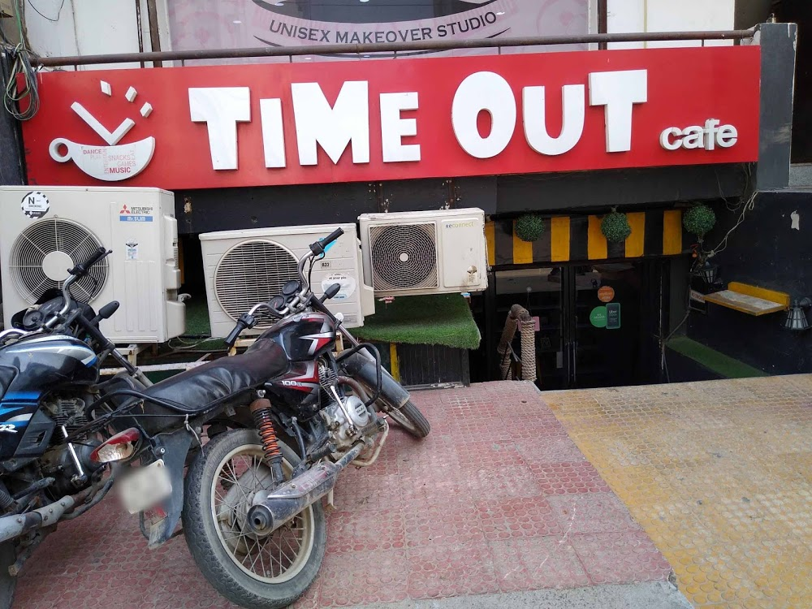
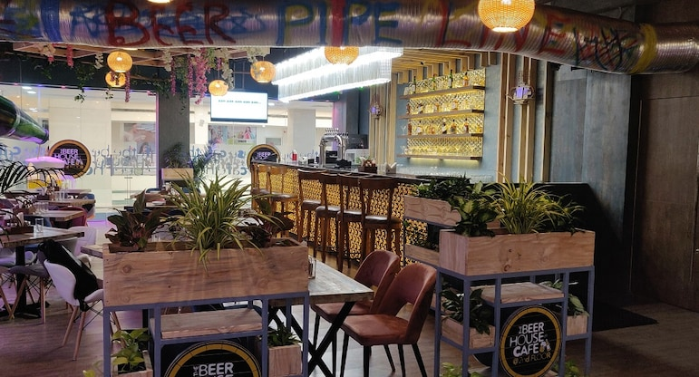

Best cafes in Indirapuram
If you are a foodie, then you would have surely noticed the change that’s been happening in our lovely city. As Indirapuram is urbanising, a bunch of cafes have been popping up all over the city. Now, not all of them are good, so you shouldn’t just go to the first one that pops up when you google “cafe Indirapuram”! To make your job easier, we have compiled a list of the best Indirapuram cafes. Here you go:
Cafe 99
Cafe 99 is definitely a foodie’s delight. The team at
BestinIndirapuram had a blast while testing out this café. The
ambience, which is one of our (and we’re sure yours also) most
important factors when rating a café, is simply next-level. The
non-veg food is out of this world, and surely has our seal of
approval. The staff is polite, the waiting time is at par with other
cafes, if not better; there really is not a reason for you to not try
out this café. Given the vast number of cafes we went to for this
list, we have no doubts when saying that Cafe 99 is one of the best
Indirapuram cafes. Here’s all the information you need:
Address: Shop No 24, GC Grand Street, Vaibhav Khand,
Indirapuram, Ghaziabad, Uttar Pradesh 201014
Reader's Cafe
This beautiful café, located at the Indirapuram Habitat Centre, is
simply a reader’s delight. It’s spacious and the interior is simply
drop-dead gorgeous. It also somehow manages to give a homely and
peaceful vibe. Having a meal here is as soothing as watching a sunset.
With a diverse menu, the Reader's Cafe has managed to quickly became a
favourite of ours. The staff really knows the details about the food;
customization is easily done to your orders. Here, you can relax and
eat your food, while watching the world outside the glass doors go on
at its rapid pace. To reach there, here’s all the information you
need:
Address: First Floor, B-208-212, Indirapuram Habitat Centre Plot
No 16, Ahinsa Khand 1, Ghaziabad, Uttar Pradesh 201014
Phone:
092050 06361
Time Out Cafe, Indirapuram

It's not every day that you stumble into a café, and know right away,
that this is a place you would be visiting more than once. Time Out
Cafe is that place. The staff’s particularly delightful and polite,
and they were more than happy to answer our queries. The décor's
minimalistic, yet immensely powerful. And to say that the food is
tasty would be an understatement. But in the end, what makes this café
unique among other Indirapuram cafes, is the definite, distinctive,
“vibe”. It can’t be really summed in words, no matter how hard we try
(and we’re trying). Want to visit right away? Here’s how you can go
about doing that:
Address: Plot No. 22, Mall Road, Near Ashiana Green, Ahinsa
Khand 2, Indirapuram, Ghaziabad, Uttar Pradesh 201014
Phone:
0120 434 5283
Woodbox Indirapuram

Woodbox Cafe, located at the prime destination of GC Grand Street, can
be described using many different words. We choose to describe it as
an “experience”. Right from the moment you enter, you would be able to
see why Woodbox stands out in a crowd of Indirapuram cafes. The
ambience and the interior decor is one of the most unique in its
category. And the food is simply mouth-watering. Be it veg or non-veg,
you will find much to fulfill your appetite here. We have no qualms in
saying that in a race for the title of the best café in Indirapuram,
Woodbox Cafe is surely a frontrunner. Here is their contact
information:
Address: GC Grand Tower, Shop 22, Middle Cir, Vaibhav Khand,
Indirapuram, Ghaziabad, Uttar Pradesh 201014
Phone: 095551 96283
Beer House Cafe

Last, but definitely not the least in our books (and they are the only
ones that really matter), is the Beer House Cafe. Located inside
Shipra mall, the Beer House Cafe gives you everything you would want
in a café. Great food? Check. Helpful staff? Check. An amazing yet
somehow low-key aesthetic ambience? Check. What more could you want?
The team behind BestinIndirapuram had a total blast in that place. And
we’re sure that you would also have a similar experience if you go
there with your gang. And a bonus little tip from our side –
Definitely order their drinks. They are divine. Can’t wait to check
out Beer House Cafe? Here’s how you reach them:
Address: 2nd floor Shipra mall, Indirapuram, Ghaziabad, Uttar
Pradesh 201014
Phone: 0120 455 2299
So, that was it! Now you know what are the best cafes in Indirapuram. Liked it? Great! Check our other articles here. And if you think someone needs this information, don’t hesitate to share this page on WhatsApp, Facebook or even through word-of-mouth.